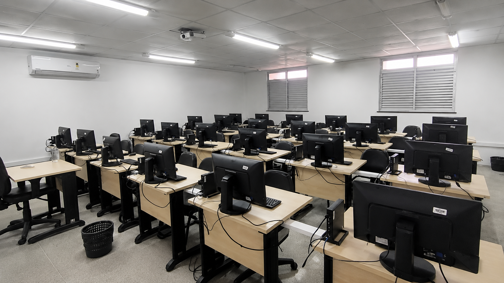

O Que é Extensão?
A extensão promove a integração entre o IFCE e a comunidade, desenvolvendo ações, projetos, cursos e eventos que contribuem para o desenvolvimento social, cultural, científico e tecnológico da região.
Educação
Desenvolvimento de cursos, oficinas e ações educativas que ampliam o acesso ao conhecimento.
Cultura
Atividades culturais e artísticas que valorizam a diversidade e a identidade regional.
Tecnologia
Soluções tecnológicas voltadas para inovação e desenvolvimento da comunidade.
Meio Ambiente
Projetos de sustentabilidade e conscientização sobre preservação ambiental.
Empreendedorismo
Incentivo a ideias inovadoras e ao desenvolvimento de iniciativas empreendedoras.
Inclusão Social
Ações que promovem cidadania, igualdade de oportunidades e participação social.
Impacto da Extensão
A extensão fortalece a conexão entre o IFCE Campus Boa Viagem e a comunidade por meio de projetos, eventos e ações transformadoras.
Projetos de Extensão
Desenvolvimento de iniciativas que levam conhecimento, tecnologia e inovação para além dos muros da instituição.
Integração Comunitária
Aproximação entre o campus e a sociedade por meio de ações voltadas às necessidades da comunidade local.
Parcerias Institucionais
Colaboração com órgãos públicos, empresas e organizações para ampliar o alcance das ações extensionistas.
Eventos e Oficinas
Realização de atividades educativas, culturais e profissionais que promovem aprendizado e troca de experiências.
Projetos em Destaque
Conheça algumas iniciativas que contribuem para o desenvolvimento social, tecnológico e educacional da região.

LISA
O Laboratório de Inovação para o Desenvolvimento do Semiárido promove projetos voltados para pesquisa, inovação e desenvolvimento de soluções tecnológicas para a região.
Notíciasablisa.html" class="botao-2">Saiba Mais
CIDS
O Centro de Integração e Desenvolvimento Social realiza ações que aproximam o IFCE da comunidade, fortalecendo iniciativas educacionais, culturais e sociais.

Oficinas e Eventos
Cursos, palestras, minicursos e oficinas promovem a troca de conhecimentos entre estudantes, servidores e a comunidade externa.